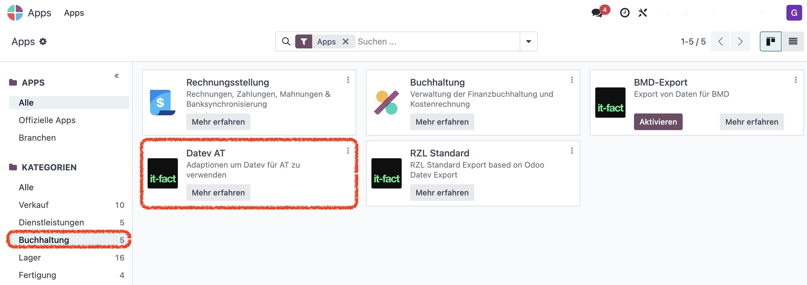
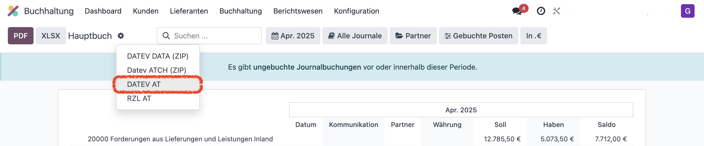
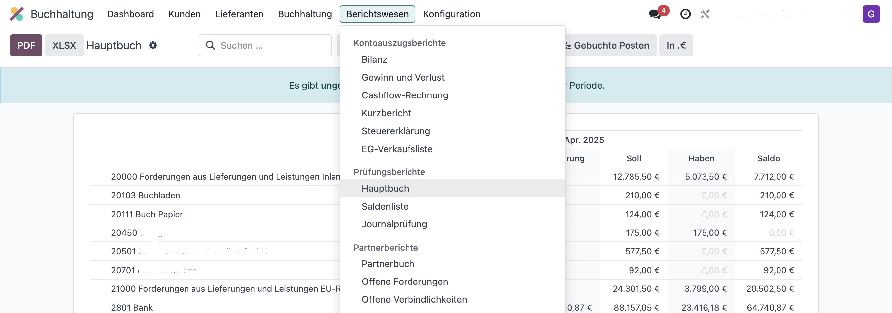
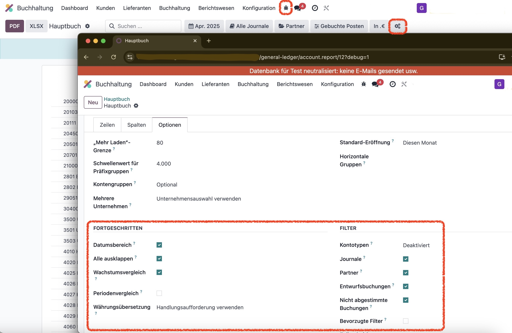

🔧 Installation
Die App Datev AT (datev_at) ermöglicht einen DATEV-konformen Export der österreichischen Odoo-Buchhaltung.
Die Dateien müssen in den Add-on-Pfad gelegt und die App über das Odoo-Backend installiert werden.
🧭 Bedienung
Gehe zu Buchhaltung → Berichtswesen → Hauptbuch, um den Export zu starten.

Wähle Zeitraum und Journale (z. B. AR, ER, BK, ...) und exportiere über das Zahnradmenü.
⚙️ Zusatzkonfigurationen
👤 Personenkonten
Im Kunden- bzw. Lieferantenstamm lässt sich unter Buchhaltung ein Standard-Debitoren- oder Kreditorenkonto festlegen.
🔢 Länge der Kontonummern
In den Einstellungen kannst du die Stellenanzahl für Sach-, Kunden- und Lieferantenkonten konfigurieren.
🧪 Filtermöglichkeiten
Im Developer-Modus lassen sich erweiterte Filter ein- und ausblenden, um den Export zu individualisieren.
